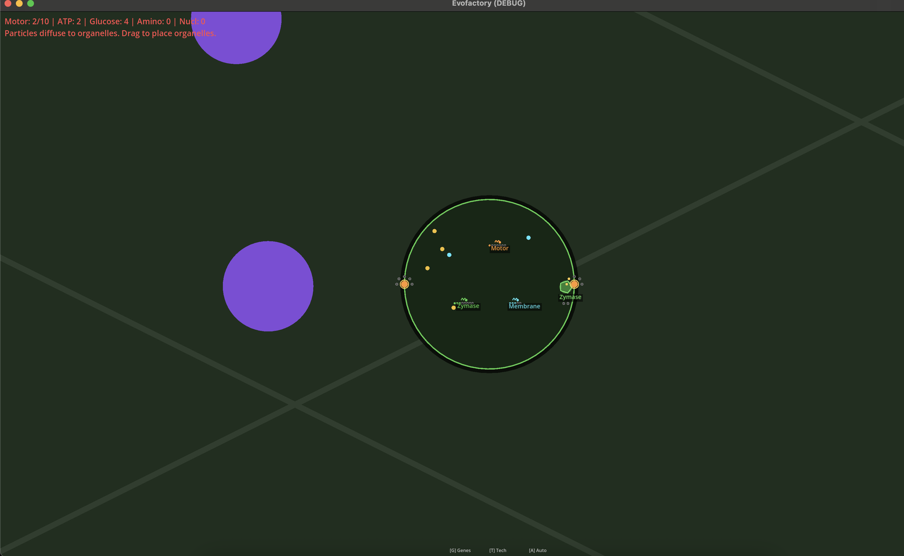
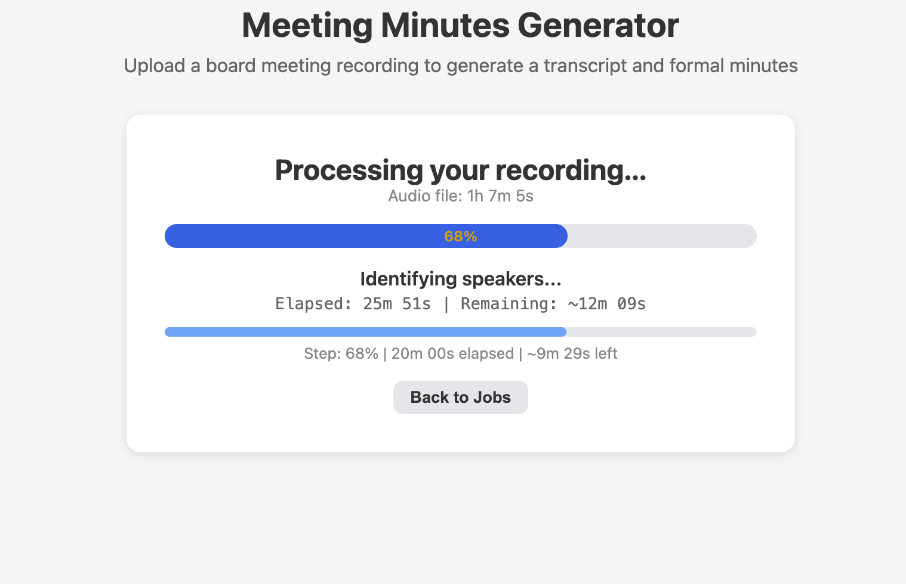

What I'm Building
Splendor

About
A full implementation of the Renaissance-era gem trading board game. Collect gems, purchase development cards, and attract nobles to earn prestige points. Features a Haskell game engine backend with a React TypeScript web client, supporting multiplayer lobbies, invite sessions, and AI opponents.
Try It Out
Play Splendor online — create a lobby, invite friends, or challenge the AI.
Related Blog Post — Are More Compile Time Checks Helpful?
AI has the same failure modes as a junior engineer. Strict types, aggressive compilers, and comprehensive tests keep both in line.
Tech Stack
EvoFactory

About
A real-time cell biology simulation game with Factorio-style automation at a cellular scale. Control a living cell in a procedurally generated world — absorb resources, build organelles, program gene regulation rules, and evolve through a biology-inspired tech tree. Features two perspectives: a dimetric world view for resource gathering and an interior view for organelle management. Rust handles the physics simulation and crafting logic via GDExtension.
Related Blog Post — When Humans Have to Be in the Loop Still
Tests catch correctness. They can't catch whether a game feels good to play.
Tech Stack
Meeting Minutes

About
Transforms board meeting recordings into formal meeting minutes. Transcribes audio with speaker diarization to identify who said what, then uses AI to generate structured minutes with attendees, motions, votes, and action items.
Tech Stack
Mi Pueblo
About
Community-focused local business directory with geospatial search. A Phoenix-powered backend with Flutter mobile app, using PostGIS for location-based queries.
Tech Stack
Cutting Boards
About
Handcrafted hardwood cutting boards — woodworking meets functional design. Each board is individually designed and built from sustainably sourced hardwoods.
Tech Stack
Voltvoice

About
A Bitcoin/Lightning donation platform for streamers — like YouTube SuperChat, but self-custodial. Creators accept cryptocurrency donations with real-time notifications and full control of their wallets, powered by BTCPay Server.
Try It Out
voltvoice.io
Tech Stack
My Technical Musings in an AI Age
AI is the most transformational tool for software engineers since we switched from punch cards. It's changed a lot about my workflow and how I approach the craft.
Here's where I document my thoughts with each project.
When Humans Have to Be in the Loop Still
Tests catch correctness. They can't catch whether a game feels good to play.
Are More Compile Time Checks Helpful?
AI has the same failure modes as a junior engineer. Strict types, aggressive compilers, and comprehensive tests keep both in line.
Building a Resume Tailoring Pipeline with Claude Code
A master resume, a slash command, an ATS validator, and a generate-validate loop that turns job postings into tailored PDFs.
See all blog posts
What People Have Paid Me To Build
RouteMyPermit
AI-powered permit route converter for oversize/overweight trucking. Carriers upload PDF permits and the system extracts route data, geocodes highways and mileposts across 13+ states, and generates interactive maps with turn-by-turn directions and shareable Google Maps links.
AI-Powered Logistics Recruiter
AI-powered driver recruitment platform using verified ELD data. Instead of self-reported resumes, recruiters search GPS-verified miles, Hours of Service compliance, weather experience, and daily driving patterns. Features an interactive globe UI and natural language search via MCP.
Honk
Driver-owned trucking profile platform. Converts GPS-backed driving data into verified career records with real-time location tracking, HOS compliance monitoring, social leaderboards, and ELD provider aggregation. Mobile-first with a consumer-grade design philosophy.
RoboWrangle @ Amazon Robotics
Orchestration tooling for warehouse robotic systems at Amazon Robotics. Built software for coordinating robotic arms and gantry systems in fulfillment centers.
Let's Build Together
Appropos is a software consultancy I run with Jeff Pelton, specializing in AI-powered projects. Whether you need intelligent automation, LLM integrations, or full-stack product development — we can help.